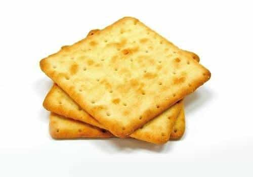

< < < Back
Will The Swedish Negro Ball (Negerboll) Survive The Era Of Political Correctness? – Return Of Kings
They’re brown, sweet, and probably Milo Yiannopoulos’s favourite pastry if he ever tasted them. I’m referring to the popular Swedish negerbollar (“negro balls” as translated into English).
I remember making them with my mother as a kid. We used butter, cocoa, rolled oats, sugar and black coffee, mixed it up and then rolled the dough into small balls. On top of them we sprinkled pearl sugar, but it’s also common to use coconut flakes. Our negro balls were so good that I would have eaten them all at once if my mother hadn’t made me wait.
Back then, I wasn’t really aware of concepts like political correctness and racism, and I didn’t think that it was still relevant to talk about racism in this day and age. I thought no one cared about skin color anymore. I probably knew what “neger” (negro or nigger) meant, but I couldn’t imagine that “negerbollar” could offend anybody. I guess I was naive, and I had no idea of how hypersensitive society was becoming.
But times have changed. Now you can’t utter the n-word (as a white person) in any context without someone getting very upset. Very few people, at least in my age, would use the word neger. Instead we say black or dark-skinned person. But a lot of Swedes still say negerbollar.
Leftists have declared war on negerbollar

Fredrik Virtanen.
If you know what leftists are like, you know that they love policing language and, by extension, thought. They don’t want you to say certain words and phrases because they can somehow be dangerous and offensive. They also think they can read minds and know that you’re a racist when in fact you’re not.
So, naturally, a lot of leftists have have spoken out against using the name negerbollar. They want us to say “chokladbollar” (chocolate balls) instead (which is the most unoriginal and boring name imaginable). The famous columnist Fredrik Virtanen says, “Negerboll is not a funny name for chocolate ball, it’s racism.” He thinks “white skins” are just filled with hatred for blacks: “Racism lives within us. It’s a part of our European colonial heritage.”
Another socialist, Daisy Kintu, thinks it’s racist to defend even the right to say negerbollar. “Because the word has been used against black people, you as a white person can’t sit and judge whether it’s racist or not. The word hasn’t been used against you, so sit down and listen instead.”
White knight Jonas Stentäpp writes in the same vein: “It is not white people that should decide if the term negerboll is offensive, it is those who are subjected that should decide if it’s offensive or not.” So the basic idea is that white people should just shut up and not have an opinion on this subject. Logic and facts come second to skin color and level of grievance. It’s SJW argumentation 101.
Making the dictionary PC
Leftists could celebrate a small victory last year when a new edition of the official Swedish dictionary was released. Words like “hen” (a gender neutral pronoun) and “intersektionalitet” (intersectionality) were added, while “negerboll” was removed. According to the man in charge of putting together the new dictionary, negerboll was thrown out not because it’s become out of use, but because some say it’s offensive.
The left has also tried to shut down shops where negerbollar are sold. In 2014, a store owner was reported to the police for selling them without using the PC name chocolate balls. The organization responsible for the report was Afrosvenskarnas riksförbund (kind of like the NAACP of Sweden). While the police found that no crime had been committed, the store owner still made a public apology and promised to change the name of the pastry.
Still some people have the guts to use the traditional term. A bakery in southern Sweden called one of their products Luxury Negerboll. “We have five different kinds of balls and they all can’t be called chocolate balls”, the boss said. After getting negative attention in the media, the name has now been changed to “Luxury N…boll.”
Anti-racist balls?
Despite what leftists say, I think eating negerbollar can actually be seen as an anti-racist act. If you really were a racist, would you be eating something that had the n-word in its name? If a white person putting negerbollar into his mouth isn’t a sign of tolerance, I don’t know what is.
Furthermore, putting white sugar on top of a brown ball exemplifies how combining colors can produce a great result. A racist person would prefer the ball to be either black or white, as mixing them would reduce the value of it. But of course you can use brown sugar instead of white, if you’re more leaning toward the black power side.
But the real question is: Are black people and white SJWs right in being offended by the name? I think not. When Swedes use the name negerbollar, they aren’t talking about a person or anything relating to people. They’re referring to an eatable chocolate flavored ball that gets its dark color from cocoa. “Neger” might be regarded as a derogatory term today, but it comes from the Latin word for black.
Racist crackers?

Imagine if white people were offended by the word “cracker” when being used to refer to biscuits. Would that make any sense? I’ve never heard of anyone being hesitant about saying cracker, yet most people are probably aware that it’s also a derogatory term for white people. It’s true that it doesn’t have the same connotations to slavery and oppression, but it’s still meant to be disparaging.
In the end it comes down to whether you’re willing to constantly adapt your language to the politically correct rules of the day, or not. SJWs will always find reasons to call white people racist, it’s a big part of their narrative, so you won’t solve anything by kowtowing to them.
For me personally, probably like many of you who visit this site, being told I can’t do something makes me want to do it even more. So I won’t stop saying negerbollar anytime soon. I also hope many more Swedish men find the courage to grow their own balls nice and big, and refuse to comply with the politically correct demands of the left.
Read More: How Political Correctness Killed 1,200 People